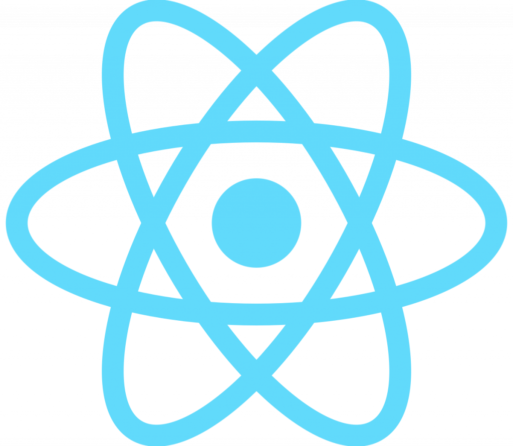
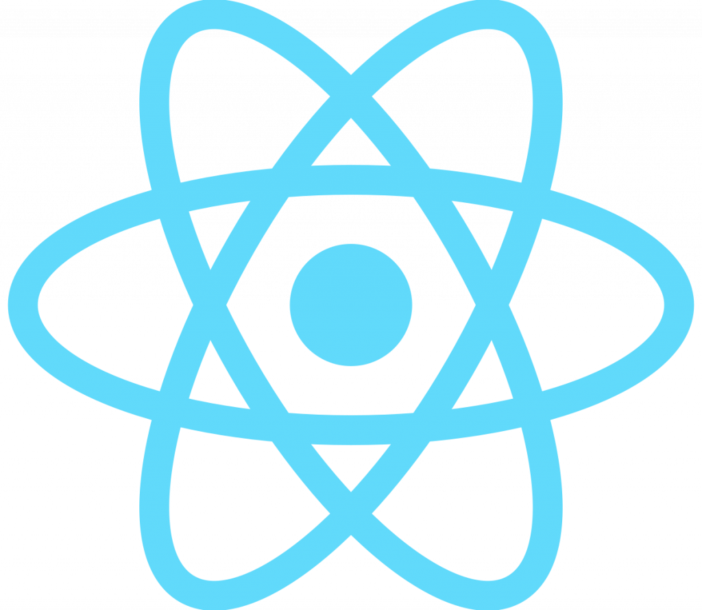
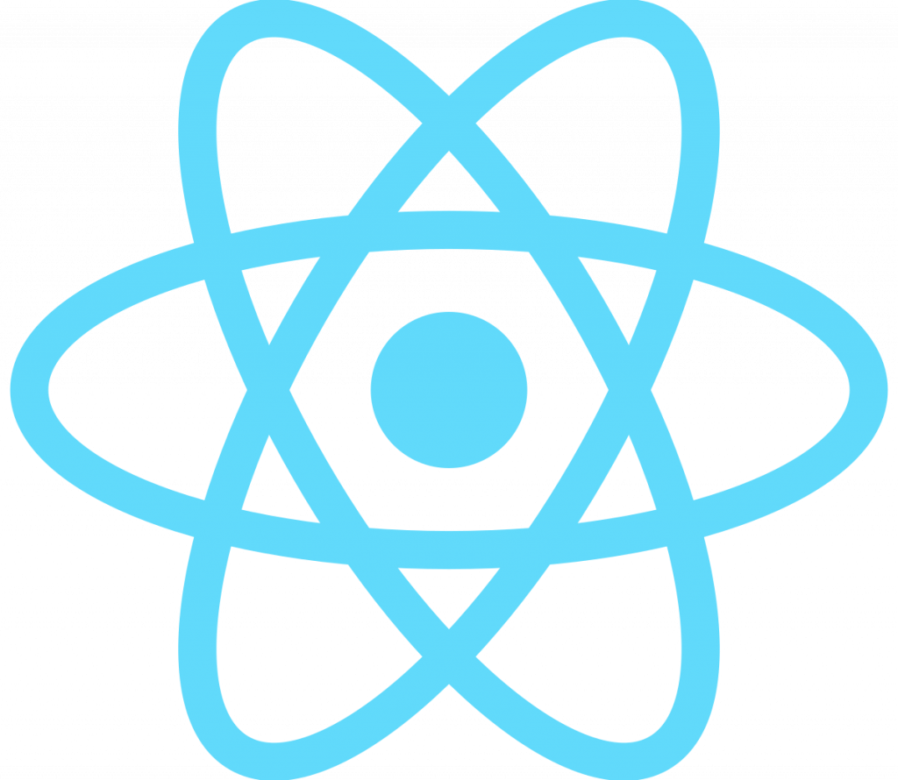
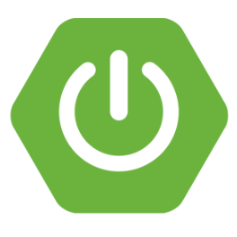
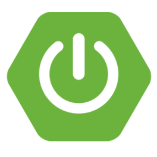
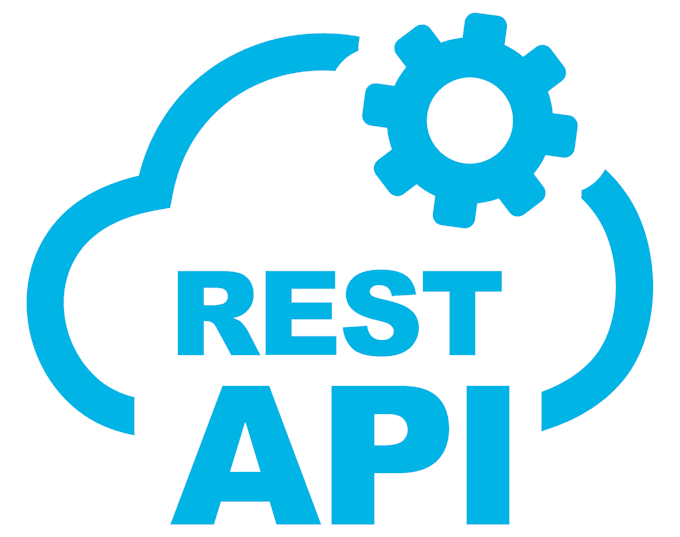
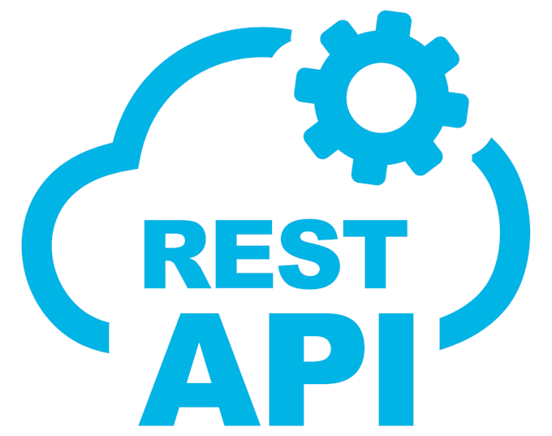
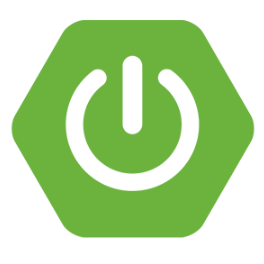
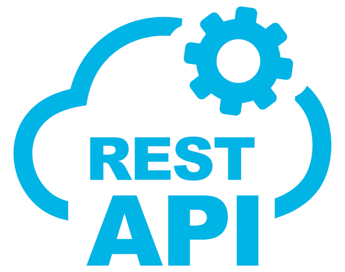

채팅창
김남규 프로필
성장을 즐기는 프론트엔드 개발자
사용자 경험에 가치를 더하는 UI를 만들고, 소통과 학습으로 성장합니다.
"아이디어를 현실로 만드는 도구들입니다."
Frontend
 



Version Control


Backend
 

 



Design & Collaboration


Database

서당개 3년이면 풍월을 읊는다는 신념으로 매일 꾸준히 공부하고있습니다.
Web Project(PC)
- 7-eleven
-
- XHTML 1.0 기반 사이트 를 HTML5와 CSS3로 재구현
- 시멘틱 태그를 활용해 SEO 최적화 및 아웃라인을 재구성
- jQuery로 header 및 nav 영역의 드롭다운 기능을 적용
- 이미지로 제공되던 텍스트를 웹 폰트로 변경하여 웹 접근성 및 웹 표준 준수
- php 기반 로그인 / 회원가입 / 아이디 & 비밀번호찾기 / 게시판 /검색 기능 구현
- Javascript / jQuery를 활용한 동적 효과 구현 (탭 메뉴, 스와이프, 아코디언 등)
- 제작스킬
- 🛠
- 색상/폰트
- 빨깡 주황 초록이 산수크로리 로보터
- 제작인원
- 1dlsrjdsafjsdfkljsdlkfj